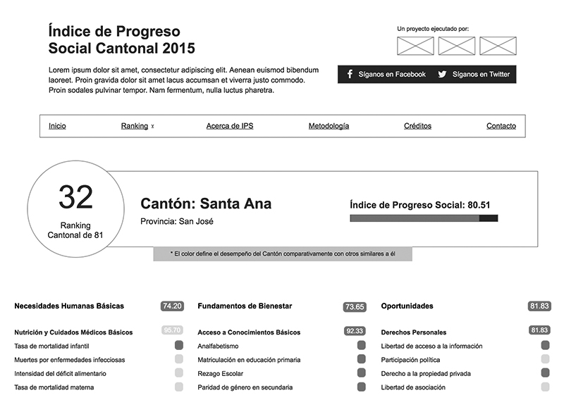
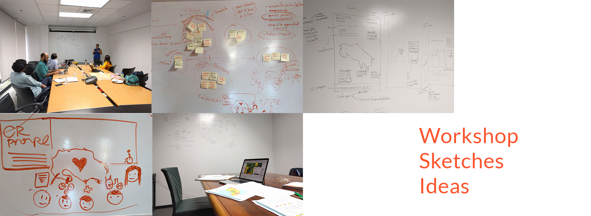
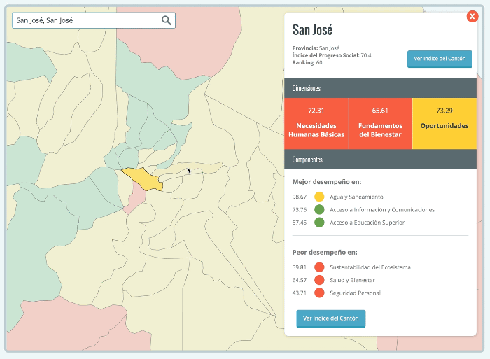
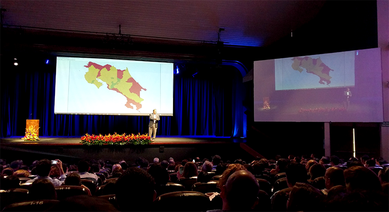

Costa Rica Propone - Mesa de Innovación
Costa Rica Propone needed to visualize complex data in a simple and easy way, so that many stakeholders, from Mayors to citizens of Costa Rica could understand the Social Progress Index.

What I did
To create a simple interface of an index that has more than 40 different variables, I held a two day workshop with the Mesa de Innovación, in this session we were able to iterate on them until we found the right solution to represent an accurate visualization of these data.

After this workshop we built a usable and easy to use interface that would let you explore and consume in a journey full of curiosity the state of each region of the country.

Key tools and deliverables
- Workshop
- Design Studio
- Prototyping
Results
We were able to deliver a website that was used all around Costa Rica, having press coverage [1], [2], [3, video].

Mesa de Innovación was pleased with all the work we've done and that's why we're developing the second phase of the project.